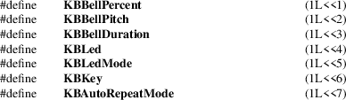

XChangeKeyboardControl, XGetKeyboardControl, XAutoRepeatOn, XAutoRepeatOff, XBell, XQueryKeymap, XKeyboardControl − manipulate keyboard settings and keyboard control structure
|
int XChangeKeyboardControl(Display *display, unsigned long value_mask, XKeyboardControl *values); | |
|
int XGetKeyboardControl(Display *display, XKeyboardState *values_return); | |
|
int XAutoRepeatOn(Display *display); | |
|
int XAutoRepeatOff(Display *display); | |
|
int XBell(Display *display, int percent); | |
|
int XQueryKeymap(Display *display, char keys_return[32]); |
|
display |
Specifies the connection to the X server. |
keys_return
Returns an array of bytes that identifies which keys are pressed down. Each bit represents one key of the keyboard.
|
percent |
Specifies the volume for the bell, which can range from −100 to 100 inclusive. |
value_mask
Specifies which controls to change. This mask is the bitwise inclusive OR of the valid control mask bits.
|
values |
Specifies one value for each bit set to 1 in the mask. |
values_return
Returns the current keyboard controls in the specified XKeyboardState structure.
The XChangeKeyboardControl function controls the keyboard characteristics defined by the XKeyboardControl structure. The value_mask argument specifies which values are to be changed.
XChangeKeyboardControl can generate BadMatch and BadValue errors.
The XGetKeyboardControl function returns the current control values for the keyboard to the XKeyboardState structure.
The XAutoRepeatOn function turns on auto-repeat for the keyboard on the specified display.
The XAutoRepeatOff function turns off auto-repeat for the keyboard on the specified display.
The XBell function rings the bell on the keyboard on the specified display, if possible. The specified volume is relative to the base volume for the keyboard. If the value for the percent argument is not in the range −100 to 100 inclusive, a BadValue error results. The volume at which the bell rings when the percent argument is nonnegative is:
base − [(base * percent) / 100] + percent
The volume at which the bell rings when the percent argument is negative is:
base + [(base * percent) / 100]
To change the base volume of the bell, use XChangeKeyboardControl.
XBell can generate a BadValue error.
The XQueryKeymap function returns a bit vector for the logical state of the keyboard, where each bit set to 1 indicates that the corresponding key is currently pressed down. The vector is represented as 32 bytes. Byte N (from 0) contains the bits for keys 8N to 8N + 7 with the least significant bit in the byte representing key 8N.
Note that the logical state of a device (as seen by client applications) may lag the physical state if device event processing is frozen.
The XKeyboardControl structure contains:
/* Mask bits for ChangeKeyboardControl */

/* Values */
typedef struct
{
int key_click_percent;
int bell_percent;
int bell_pitch;
int bell_duration;
int led;
int led_mode; /* LedModeOn, LedModeOff */
int key;
int auto_repeat_mode; /* AutoRepeatModeOff,
AutoRepeatModeOn,
AutoRepeatModeDefault */
} XKeyboardControl;
The key_click_percent member sets the volume for key clicks between 0 (off) and 100 (loud) inclusive, if possible. A setting of −1 restores the default. Other negative values generate a BadValue error.
The bell_percent sets the base volume for the bell between 0 (off) and 100 (loud) inclusive, if possible. A setting of −1 restores the default. Other negative values generate a BadValue error. The bell_pitch member sets the pitch (specified in Hz) of the bell, if possible. A setting of −1 restores the default. Other negative values generate a BadValue error. The bell_duration member sets the duration of the bell specified in milliseconds, if possible. A setting of −1 restores the default. Other negative values generate a BadValue error.
If both the led_mode and led members are specified, the state of that LED is changed, if possible. The led_mode member can be set to LedModeOn or LedModeOff. If only led_mode is specified, the state of all LEDs are changed, if possible. At most 32 LEDs numbered from one are supported. No standard interpretation of LEDs is defined. If led is specified without led_mode, a BadMatch error results.
If both the auto_repeat_mode and key members are specified, the auto_repeat_mode of that key is changed (according to AutoRepeatModeOn, AutoRepeatModeOff, or AutoRepeatModeDefault), if possible. If only auto_repeat_mode is specified, the global auto_repeat_mode for the entire keyboard is changed, if possible, and does not affect the per-key settings. If a key is specified without an auto_repeat_mode, a BadMatch error results. Each key has an individual mode of whether or not it should auto-repeat and a default setting for the mode. In addition, there is a global mode of whether auto-repeat should be enabled or not and a default setting for that mode. When global mode is AutoRepeatModeOn, keys should obey their individual auto-repeat modes. When global mode is AutoRepeatModeOff, no keys should auto-repeat. An auto-repeating key generates alternating KeyPress and KeyRelease events. When a key is used as a modifier, it is desirable for the key not to auto-repeat, regardless of its auto-repeat setting.
The XKeyboardState structure contains:
typedef struct
{
int key_click_percent;
int bell_percent;
unsigned int bell_pitch, bell_duration;
unsigned long led_mask;
int global_auto_repeat;
char auto_repeats[32];
} XKeyboardState;
For the LEDs, the least significant bit of led_mask corresponds to LED one, and each bit set to 1 in led_mask indicates an LED that is lit. The global_auto_repeat member can be set to AutoRepeatModeOn or AutoRepeatModeOff. The auto_repeats member is a bit vector. Each bit set to 1 indicates that auto-repeat is enabled for the corresponding key. The vector is represented as 32 bytes. Byte N (from 0) contains the bits for keys 8N to 8N + 7 with the least significant bit in the byte representing key 8N.
|
BadMatch |
Some argument or pair of arguments has the correct type and range but fails to match in some other way required by the request. | ||
|
BadValue |
Some numeric value falls outside the range of values accepted by the request. Unless a specific range is specified for an argument, the full range defined by the argument’s type is accepted. Any argument defined as a set of alternatives can generate this error. |
XChangeKeyboardMapping(3),
XkbChangeEnabledControls(3), XkbBell(3), XkbDeviceBell(3),
XkbGetMap(3), XSetPointerMapping(3)
Xlib − C Language X Interface